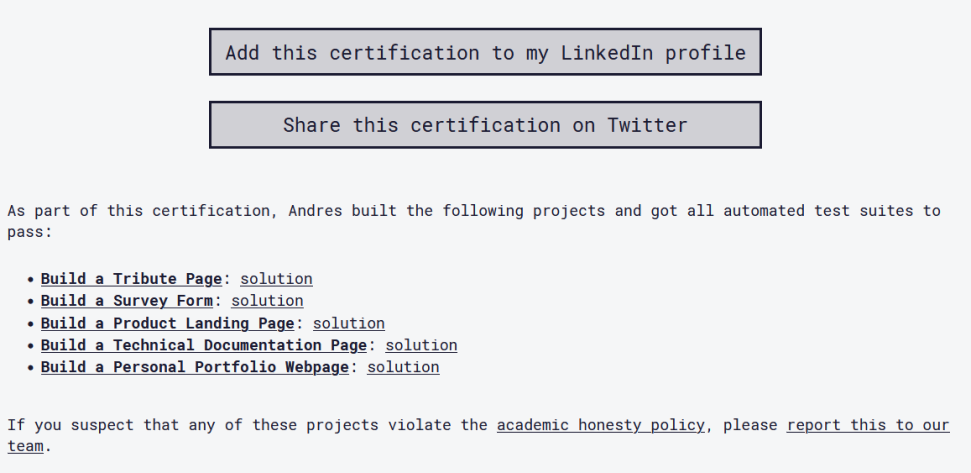

Me llamo Alvaro Andres Justiniano Herrera (la mayoría me llaman Gato que es mi apodo). Soy desarrollador
web.
Estudiante de Ingeniería en sistemas, con HTML y CSS de videos tutoriales y autodidactas he construido un
Portafolio para hacerme conocer en GitHub Pages.
Mi interés en la codificación creció
gradualmente, con énfasis en el desarrollo de sistemas de información.
Durante mi camino, me familiaricé con frameworks de desarrollo que ayudan un montón,
hay un increíble aprendizaje continuo.
Skills
Herramientas de desarrollo
nivel avanzado
nivel medio
Diseño
Idiomas
Estrategias de desarrollo
Intereses
Disfruto mucho de los videojuegos de primera persona, están también los juegos de celular, en especial
Wild Rift que es increíble como lo lograron realizar en dispositivos móviles.
Me encanta ver partidos de fútbol, mi equipo favorito es Liverpool, también suelo disfrutar las
disciplinas deportivas
como el tennis, voleiboy, natación, entre otros.
Proyectos
FreeCodeCamp

Cuenta como proyecto los distintos retos presentados de freecodecamp..
Se presentan varias clases de tutoriales a seguir, entre ellas la que presento son de Responsive Web Design.
Retos que pueden ser visualizados en por CodePen página especializada que
funciona como un editor de código en línea y un entorno de aprendizaje de código abierto, donde los desarrolladores pueden crear fragmentos de código.